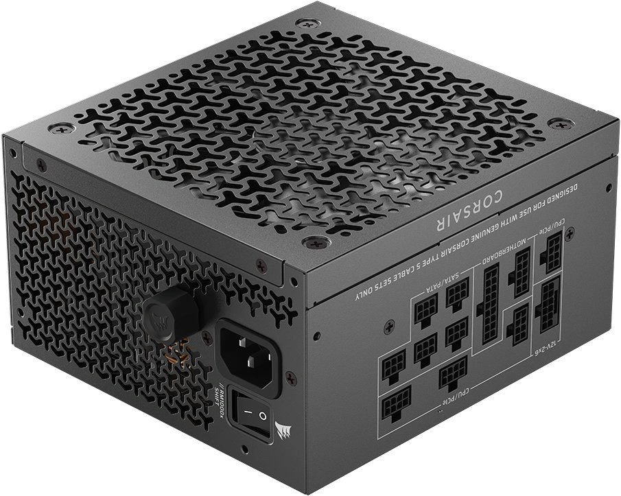

Zdroj
Napájecí zdroj (Power Supply Unit, PSU) zajišťuje dodávku elektrické energie všem komponentám počítače. Převádí střídavé napětí ze sítě na stabilizovaná stejnosměrná napětí, která potřebují jednotlivé části počítače pro svůj provoz.
Zdroj ale neslouží jen jako „krabička s elektřinou“. Kvalitní zdroj zároveň chrání komponenty před přepětím, zkratem nebo kolísáním napětí.

Hlavní parametry při výběru zdroje
-
Výkon zdroje
Výkon zdroje udává maximální množství elektrické energie ve wattech, které je zdroj schopný dodat komponentám počítače.
Ve skutečnosti jde o součet výkonu jednotlivých napěťových větví (3,3 V, 5 V a 12 V), jejichž maximální hodnoty nelze jednoduše sečíst. Zdroj totiž neumí dodávat maximální výkon na všech větvích současně, protože některé části jeho konstrukce jsou sdílené.
V moderních počítačích je nejvíce zatěžována hlavně 12V větev, která napájí procesor a grafickou kartu.
Při výběru je proto dobré sledovat nejen celkový výkon zdroje, ale i rozložení výkonu mezi jednotlivé větve. Zároveň se vyplatí ponechat určitou rezervu, aby zdroj dlouhodobě neběžel na hranici svých možností.
-
Účinnost
Účinnost zdroje udává, jak efektivně dokáže přeměnit elektrickou energii ze sítě na energii pro komponenty počítače.
Vyjadřuje se v procentech jako poměr mezi výkonem dodaným počítači a výkonem odebraným ze zásuvky. Zbytek energie se mění na teplo. Vyšší účinnost znamená nižší ztráty, menší zahřívání zdroje a často také tišší provoz. Účinnost zdroje se mění podle zatížení a nejvyšších hodnot obvykle dosahuje přibližně při střední zátěži. Pro orientaci se používá certifikace 80 PLUS, která rozděluje zdroje do úrovní jako Bronze, Silver, Gold nebo Platinum. Certifikace ale hodnotí hlavně účinnost a sama o sobě není zárukou celkové kvality zdroje.
-
Konektory a kabeláž
Zdroj obsahuje různé typy konektorů pro připojení jednotlivých komponent počítače.
Mezi základní patří hlavní 24pinový ATX konektor pro základní desku, napájecí konektor procesoru (4+4 pin EPS), PCI Express konektory pro grafické karty a SATA konektory pro napájení disků.
Při výběru zdroje je dobré ověřit, že nabízí dostatečný počet správných konektorů pro konkrétní sestavu. Pokud zdroj nemá novější typ konektoru jako 12VHPWR pro moderní grafické karty, můžeme použít redukci, ale zdroj musí na 12V větvi nabízet potřebný výkon.
Zdroje se liší také způsobem připojení kabeláže. Plně modulární zdroje mají všechny kabely odpojitelné, takže ve skříni nepřekáží kabely, které nejsou potřeba.
Nemodulární zdroje mají kabeláž pevně připojenou. Existují také semi-modulární zdroje, kde je část kabelů pevná a část lze odpojit.
-
Ochrany zdroje
Kvalitní zdroje obsahují různé ochranné mechanismy, které chrání zdroj i ostatní komponenty počítače. - OVP – ochrana proti přepětí
- UVP – ochrana proti podpětí
- OCP – ochrana proti nadproudu
- SCP – ochrana proti zkratu
- OTP – ochrana proti přehřátí
Mezi základní ochrany patří například:
Pokud dojde k problému, zdroj se díky těmto ochranám automaticky vypne a sníží se riziko poškození hardwaru.
-
Kvalita zdroje
Kvalitu napájecího zdroje nelze poznat podle jediného parametru. Důležité je celkové konstrukční provedení, použité součástky i stabilita výstupního napětí. Certifikace účinnosti může posloužit jako orientační vodítko, ale sama o sobě ještě neznamená, že jde o kvalitní zdroj. Při výběru je proto dobré sledovat také nezávislé recenze, výsledky testů a délku záruky.